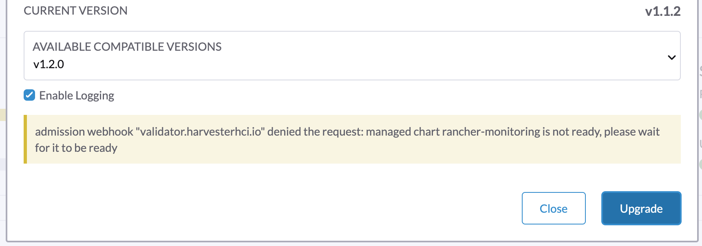
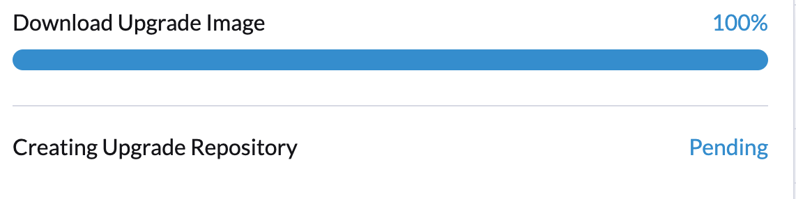

Actualizar versión de v1.1.2 a v1.2.0 (no recomendado)
|
Debido a los problemas conocidos encontrados en v1.2.0: No recomendamos actualizar a v1.2.0. Por favor, actualizad vuestro clúster v1.1.x a la v1.2.1. |
Información general
|
Antes de comenzar una actualización, podéis ejecutar el script de pre-verificación para aseguraros de que el clúster está en un estado estable. Para más detalles, por favor visitad este URL para el script. |
Una vez que haya una versión actualizable, la página del panel de control de Harvester GUI mostrará un botón para actualizar. Para más detalles, por favor, referíos a iniciar una actualización.
Para la actualización en un entorno aislado, por favor, referíos a preparar una actualización en un entorno aislado.
Problemas conocidos
1. No se puede iniciar una actualización y se informa "validator.harvesterhci.io" denied the request: managed chart rancher-monitoring is not ready, please wait for it to be ready
Si un clúster está configurado con una red de almacenamiento, no se puede iniciar una actualización con el siguiente mensaje.

2. Una actualización está atascada en Creating Upgrade Repository
Durante una actualización, Creando repositorio de actualización está atascado en el estado Pendiente:

Por favor, realizad los siguientes pasos para comprobar si el clúster se encuentra con el problema:
-
Comprobad el pod del repositorio de actualización:

Si el
virt-launcher-upgrade-repo-hvst-<upgrade-name>pod permanece enContainerCreating, es posible que vuestro clúster haya encontrado este problema. En este caso, proceded con el paso 2. -
Verificad el volumen del repositorio de actualización en la interfaz gráfica de Longhorn.
-
Navegad a la página Volumen.
-
Verificad el volumen de la máquina virtual del repositorio de actualización. Debería estar adjunto a un pod llamado
virt-launcher-upgrade-repo-hvst-<upgrade-name>. Si una de las réplicas del volumen permanece enStopped(color gris), el clúster está enfrentando el problema.
-
Problema relacionado:
-
Solución:
-
Eliminad la réplica
Stoppeddesde la interfaz gráfica de Longhorn. O bien:
-
3. Una actualización está atascada al pre-drenar un nodo.
A partir de la versión v1.1.0, Harvester esperará a que todos los volúmenes estén saludables (cuando el número de nodos sea >= 3) antes de actualizar un nodo. Generalmente, podéis verificar la salud de los volúmenes si una actualización está atascada en el estado de "pre-drenado".
Visitad "Acceso a Longhorn embebido" para ver cómo acceder a la Longhorn GUI embebida.
También podéis verificar los registros del trabajo de pre-drenado. Consultad Fase 4: Actualizad nodos en la guía de resolución de problemas:
4. Una actualización está atascada en la actualización del primer nodo: El trabajo estuvo activo más tiempo del plazo especificado.
Una actualización falla, como se muestra en la captura de pantalla a continuación:

5. Una actualización está atascada en el estado pre-drenado.
Podéis ver que una actualización está atascada en el estado pre-drenado:

En esta etapa, Kubernetes se supone que debe drenar la carga de trabajo en el nodo, pero algunas razones pueden causar que el proceso se detenga.
5.1 El nodo contiene un pod de Longhorn instance-manager-r que sirve volúmenes de réplica única
Longhorn no permite drenar un nodo si el nodo contiene la última réplica sobreviviente de un volumen. Para comprobar si un nodo se encuentra en esta situación, seguid estos pasos:
-
Listad los volúmenes de réplica única con el comando:
kubectl get volumes.longhorn.io -A -o yaml | yq '.items[] | select(.spec.numberOfReplicas == 1) | .metadata.namespace + "/" + .metadata.name'
Por ejemplo:
$ kubectl get volumes.longhorn.io -A -o yaml | yq '.items[] | select(.spec.numberOfReplicas == 1) | .metadata.namespace + "/" + .metadata.name' longhorn-system/pvc-d1f19bab-200e-483b-b348-c87cfbba85ab
-
Comprobad si la réplica reside en el nodo atascado:
Listad el NodeID de la réplica del volumen con el comando:
kubectl get replicas.longhorn.io -n longhorn-system -o yaml | yq '.items[] | select(.metadata.labels.longhornvolume == "<volume>") | .spec.nodeID'
Por ejemplo:
$ kubectl get replicas.longhorn.io -n longhorn-system -o yaml | yq '.items[] | select(.metadata.labels.longhornvolume == "pvc-d1f19bab-200e-483b-b348-c87cfbba85ab") | .spec.nodeID' node1
Si el resultado muestra que la réplica reside en el nodo donde la actualización está atascada (en este ejemplo, nodo1), vuestro clúster está enfrentando este problema.
Hay un par de maneras de abordar esta situación. Elegid el método más apropiado para vuestra VM:
-
Apagad la VM que utiliza el volumen de réplica única para desacoplar el volumen, permitiendo que la actualización continúe.
-
Ajustad las réplicas del volumen a más de una.
-
Id a la página de Volumen.
-
Localizad el volumen problemático y haced clic en el icono en el lado derecho, luego seleccionad Actualizar el conteo de réplicas:

-
Aumentad el Número de Réplicas y seleccionad OK.
5.2 Presupuestos de Disrupción de Pods (PDB) de Longhorn instance-manager-r mal configurados
Un PDB mal configurado podría causar este problema. Para comprobar si ese es el caso, realizad los siguientes pasos:
-
Asumid que el nodo atascado es
harvester-node-1. -
Verificad los nombres de los pods
instance-manager-eoinstance-manager-ren el nodo atascado:$ kubectl get pods -n longhorn-system --field-selector spec.nodeName=harvester-node-1 | grep instance-manager instance-manager-r-d4ed2788 1/1 Running 0 3d8h
La salida anterior muestra que el pod
instance-manager-r-d4ed2788está en el nodo. -
Revisad los registros de Rancher y verificad que el pod
instance-manager-eoinstance-manager-rno se pueda drenar:$ kubectl logs deployment/rancher -n cattle-system ... 2023-03-28T17:10:52.199575910Z 2023/03/28 17:10:52 [INFO] [planner] rkecluster fleet-local/local: waiting: draining etcd node(s) custom-4f8cb698b24a,custom-a0f714579def 2023-03-28T17:10:55.034453029Z evicting pod longhorn-system/instance-manager-r-d4ed2788 2023-03-28T17:10:55.080933607Z error when evicting pods/"instance-manager-r-d4ed2788" -n "longhorn-system" (will retry after 5s): Cannot evict pod as it would violate the pod's disruption budget.
-
Ejecutad el comando para comprobar si hay un PDB asociado con el nodo atascado:
$ kubectl get pdb -n longhorn-system -o yaml | yq '.items[] | select(.spec.selector.matchLabels."longhorn.io/node"=="harvester-node-1") | .metadata.name' instance-manager-r-466e3c7f
-
Verificad el propietario del gestor de instancias de este PDB:
$ kubectl get instancemanager instance-manager-r-466e3c7f -n longhorn-system -o yaml | yq -e '.spec.nodeID' harvester-node-2
Si la salida no coincide con el nodo atascado (en este ejemplo,
harvester-node-2no coincide con el nodo atascadoharvester-node-1), entonces podemos concluir que este problema ocurre. -
Antes de aplicar la solución alternativa, verificad si todos los volúmenes están saludables:
kubectl get volumes -n longhorn-system -o yaml | yq '.items[] | select(.status.state == "attached")| .status.robustness'
La salida debería ser todo
healthy. Si este no es el caso, puede que quieras descordonar nodos para que el volumen vuelva a estar saludable. -
Eliminad el PDB mal configurado:
kubectl delete pdb instance-manager-r-466e3c7f -n longhorn-system
-
Problema relacionado:
-
5.3 No se pudo drenar el pod instance-manager-e
Durante una actualización, podrías encontrar un problema donde no puedes drenar el pod instance-manager-e. Cuando ocurre esta situación, verás mensajes de error en los registros de Rancher como los que se muestran a continuación:
$ kubectl logs deployment/rancher -n cattle-system | grep "evicting pod" evicting pod longhorn-system/instance-manager-r-a06a43f3437ab4f643eea7053b915a80 evicting pod longhorn-system/instance-manager-e-452e87d2 error when evicting pods/"instance-manager-r-a06a43f3437ab4f643eea7053b915a80" -n "Longhorn-system" (will retry after 5s): Cannot evict pod as it would violate the pod's disruption budget. error when evicting pods/"instance-manager-e-452e87d2" -n "longhorn-system" (will retry after 5s): Cannot evict pod as it would violate the pod's disruption budget.
Verificad el instance-manager-e para ver si quedan instancias de motor.
$ kubectl get instancemanager instance-manager-e-452e87d2 -n longhorn-system -o yaml | yq -e ".status.instances"
pvc-7b120d60-1577-4716-be5a-62348271025a-e-1cd53c57:
spec:
name: pvc-7b120d60-1577-4716-be5a-62348271025a-e-1cd53c57
status:
endpoint: ""
errorMsg: ""
listen: ""
portEnd: 10001
portStart: 10001
resourceVersion: 0
state: running
type: ""
En este ejemplo, el instance-manager-e-452e87d2 todavía tiene una instancia de motor, por lo que no podéis drenar el pod.
Necesitáis comprobar los números de motor para ver si alguno es redundante. Cada PVC debe tener solo un motor.
# kubectl get engines -n longhorn-system -l longhornvolume=pvc-7b120d60-1577-4716-be5a-62348271025a NAME STATE NODE INSTANCEMANAGER IMAGE AGE pvc-76120d60-1577-4716-be5a-62348271025a-e-08220662 running harvester-qv4hd instance-manager-e-625d715e2f2e7065d64339f9b31407c2 longhornio/longhorn-engine:v1.4.3 2d12h pvc-7b120d60-1577-4716-be5a-62348271025a-e-lcd53c57 running harvester-lhlkv instance-manager-e-452e87d2 longhornio/longhorn-engine:v1.4.3 4d10h
El ejemplo anterior muestra que existen dos motores para el mismo PVC, lo cual es un problema conocido en Longhorn #6642. Para resolver esto, eliminad el motor redundante para permitir que la actualización continúe.
Para determinar cuál es el motor correcto, utilizad el siguiente comando:
$ kubectl get volumes pvc-7b120d60-1577-4716-be5a-62348271025a -n longhorn-system NAME STATE ROBUSTNESS SCHEDULED SIZE NODE AGE pvc-7b120d60-1577-4716-be5a-62348271025a attached healthy 42949672960 harvester-q4vhd 4d10h
En este ejemplo, el volumen pvc-7b120d60-1577-4716-be5a-62348271025a está activo en el nodo harvester-q4vhd, lo que indica que el motor que no se está ejecutando en este nodo es redundante.
Para hacer que el motor esté inactivo y activar su eliminación automática por Longhorn, ejecutad el siguiente comando:
$ kubectl patch engine pvc-7b120d60-1577-4716-be5a-62348271025a-e-lcd53c57 -n longhorn-system --type='json' -p='[{"op": "replace", "path": "/spec/active", "value": false}]'
engine.longhorn.io/pvc-7b120d60-1577-4716-be5a-62348271025a-e-lcd53c57 patched
Después de unos segundos, podéis verificar el estado del motor:
$ kubectl get engine -n longhorn-system|grep pvc-7b120d60-1577-4716-be5a-62348271025a pvc-7b120d60-1577-4716-be5a-62348271025a-e-08220b62 running harvester-q4vhd instance-manager-e-625d715e2f2e7065d64339f9631407c2 longhornio/longhorn-engine:v1.4.3 2d13h
El pod instance-manager-e debería drenarse correctamente, permitiendo que la actualización continúe.
-
Problema relacionado:
6. Una actualización está atascada en el estado de Servicio del Sistema en Actualización
Si notáis que la actualización está atascada en el estado Servicio del Sistema en Actualización durante un largo período de tiempo, es posible que necesitéis investigar si la actualización está atascada en la fase apply-manifests.

El POD prometheus-rancher-monitoring-prometheus-0 va a ser eliminado
-
Revisad el registro del pod
apply-manifestspara ver si los siguientes mensajes se repiten.$ kubectl -n harvester-system logs hvst-upgrade-md6wr-apply-manifests-wqslg --tail=10 Tue Sep 5 10:20:39 UTC 2023 there are still 1 pods in cattle-monitoring-system to be deleted Tue Sep 5 10:20:45 UTC 2023 there are still 1 pods in cattle-monitoring-system to be deleted Tue Sep 5 10:20:50 UTC 2023 there are still 1 pods in cattle-monitoring-system to be deleted Tue Sep 5 10:20:55 UTC 2023 there are still 1 pods in cattle-monitoring-system to be deleted Tue Sep 5 10:21:00 UTC 2023 there are still 1 pods in cattle-monitoring-system to be deleted
-
Verificad si el pod
prometheus-rancher-monitoring-prometheus-0está atascado con el estadoTerminating.$ kubectl -n cattle-monitoring-system get pods NAME READY STATUS RESTARTS AGE prometheus-rancher-monitoring-prometheus-0 0/3 Terminating 0 19d
-
Encontrad el UID del pod que está terminando con el siguiente comando:
$ kubectl -n cattle-monitoring-system get pod prometheus-rancher-monitoring-prometheus-0 -o jsonpath='{.metadata.uid}' 33f43165-6faa-4648-927d-69097901471c -
Acceded a cualquier nodo del clúster a través de la consola o SSH.
-
Buscad los mensajes de registro relacionados en
/var/lib/rancher/rke2/agent/logs/kubelet.logutilizando el UID del pod.E0905 10:26:18.769199 17399 reconciler.go:208] "operationExecutor.UnmountVolume failed (controllerAttachDetachEnabled true) for volume \"pvc-7781c988-c35b-4cf8-89e6-f2907ef33603\" (UniqueName: \"kubernetes.io/csi/driver.longhorn.io^pvc-7781c988-c35b-4cf8-89e6-f2907ef33603\") pod \"33f43165-6faa-4648-927d-69097901471c\" (UID: \"33f43165-6faa-4648-927d-69097901471c\") : UnmountVolume.NewUnmounter failed for volume \"pvc-7781c988-c35b-4cf8-89e6-f2907ef33603\" (UniqueName: \"kubernetes.io/csi/driver.longhorn.io^pvc-7781c988-c35b-4cf8-89e6-f2907ef33603\") pod \"33f43165-6faa-4648-927d-69097901471c\" (UID: \"33f43165-6faa-4648-927d-69097901471c\") : kubernetes.io/csi: unmounter failed to load volume data file [/var/lib/kubelet/pods/33f43165-6faa-4648-927d-69097901471c/volumes/kubernetes.io~csi/pvc-7781c988-c35b-4cf8-89e6-f2907ef33603/mount]: kubernetes.io/csi: failed to open volume data file [/var/lib/kubelet/pods/33f43165-6faa-4648-927d-69097901471c/volumes/kubernetes.io~csi/pvc-7781c988-c35b-4cf8-89e6-f2907ef33603/vol_data.json]: open /var/lib/kubelet/pods/33f43165-6faa-4648-927d-69097901471c/volumes/kubernetes.io~csi/pvc-7781c988-c35b-4cf8-89e6-f2907ef33603/vol_data.json: no such file or directory" err="UnmountVolume.NewUnmounter failed for volume \"pvc-7781c988-c35b-4cf8-89e6-f2907ef33603\" (UniqueName: \"kubernetes.io/csi/driver.longhorn.io^pvc-7781c988-c35b-4cf8-89e6-f2907ef33603\") pod \"33f43165-6faa-4648-927d-69097901471c\" (UID: \"33f43165-6faa-4648-927d-69097901471c\") : kubernetes.io/csi: unmounter failed to load volume data file [/var/lib/kubelet/pods/33f43165-6faa-4648-927d-69097901471c/volumes/kubernetes.io~csi/pvc-7781c988-c35b-4cf8-89e6-f2907ef33603/mount]: kubernetes.io/csi: failed to open volume data file [/var/lib/kubelet/pods/33f43165-6faa-4648-927d-69097901471c/volumes/kubernetes.io~csi/pvc-7781c988-c35b-4cf8-89e6-f2907ef33603/vol_data.json]: open /var/lib/kubelet/pods/33f43165-6faa-4648-927d-69097901471c/volumes/kubernetes.io~csi/pvc-7781c988-c35b-4cf8-89e6-f2907ef33603/vol_data.json: no such file or directory"
Si kubelet sigue quejándose sobre el volumen que no se puede desmontar, aplicad la siguiente solución alternativa para permitir que la actualización continúe.
-
Eliminad forzosamente el pod atascado con el estado
Terminatingcon el siguiente comando:kubectl delete pod prometheus-rancher-monitoring-prometheus-0 -n cattle-monitoring-system --force
Se van a eliminar múltiples pods en el espacio de nombres cattle-monitoring-system
-
Revisa el registro del pod
apply-manifestspara ver si los siguientes mensajes se repiten.there are still 10 pods in cattle-monitoring-system to be deleted Fri Dec 8 19:06:56 UTC 2023 there are still 10 pods in cattle-monitoring-system to be deleted Fri Dec 8 19:07:01 UTC 2023
Cuando sigue mostrando 10 (u otro número) pods, se encuentra con el siguiente problema.
The monitoring feature is deployed from the rancher-monitoring ManagedChart, in Harvester v1.2.0,v1.2.1, this ManagedChart is converted to Harvester Addon feature when upgrading. The ManagedChart rancher-monitoring is deleted, normally, all the generated resources including deployment, daemonset etc. will be deleted automatically. But in this case, those resources are not deleted. The above log reflects the result. Following instructions will guide to delete them manually.
-
Localiza los recursos afectados en el espacio de nombres
cattle-monitoring-system.Root level resources in cattle-monitoring-system Customized CRD: Prometheus Object: rancher-monitoring-prometheus Sub-object: statefulset.apps/prometheus-rancher-monitoring-prometheus Customized CRD: Alertmanager object: rancher-monitoring-alertmanager Sub-object: statefulset.apps/alertmanager-rancher-monitoring-alertmanager Deployment: rancher-monitoring-grafana rancher-monitoring-kube-state-metrics rancher-monitoring-operator rancher-monitoring-prometheus-adapter Daemonset: rancher-monitoring-prometheus-node-exporter
-
Elimina los recursos afectados.
Use below commands to delete them, meanwhile check the log of the `apply-manifests` until it does not report `there are still x pods in cattle-monitoring-system to be deleted`. kubectl delete prometheus rancher-monitoring-prometheus -n cattle-monitoring-system kubectl delete alertmanager rancher-monitoring-alertmanager -n cattle-monitoring-system kubectl delete deployment rancher-monitoring-grafana -n cattle-monitoring-system kubectl delete deployment rancher-monitoring-kube-state-metrics -n cattle-monitoring-system kubectl delete deployment rancher-monitoring-operator -n cattle-monitoring-system kubectl delete deployment rancher-monitoring-prometheus-adapter -n cattle-monitoring-system kubectl delete daemonset rancher-monitoring-prometheus-node-exporter -n cattle-monitoring-system
Es posible que necesites ejecutar algunos de los comandos más de una vez para eliminar completamente los recursos.
-
Problema relacionado
7. La actualización se quedó en el estado Upgrading System Service
Si una actualización se queda en un estado Upgrading System Service durante un período prolongado, es posible que algunos certificados de servicios del sistema hayan caducado. Para investigar y resolver este problema, sigue estos pasos:
-
Encuentra el nombre del trabajo
apply-manifestcon el comando:kubectl get jobs -n harvester-system -l harvesterhci.io/upgradeComponent=manifest
Resultado de ejemplo:
NAME COMPLETIONS DURATION AGE hvst-upgrade-9gmg2-apply-manifests 0/1 46s 46s
-
Revisa el registro del trabajo con el comando:
kubectl logs jobs/hvst-upgrade-9gmg2-apply-manifests -n harvester-system
Si aparecen los siguientes mensajes en el registro, continúa con el siguiente paso:
Waiting for CAPI cluster fleet-local/local to be provisioned (current phase: Provisioning, current generation: 30259)... Waiting for CAPI cluster fleet-local/local to be provisioned (current phase: Provisioning, current generation: 30259)... Waiting for CAPI cluster fleet-local/local to be provisioned (current phase: Provisioning, current generation: 30259)... Waiting for CAPI cluster fleet-local/local to be provisioned (current phase: Provisioning, current generation: 30259)...
-
Verifica el estado del clúster CAPI con el comando:
kubectl get clusters.provisioning.cattle.io local -n fleet-local -o yaml
Si ves una condición similar a la que se muestra a continuación, es probable que el clúster haya encontrado el problema:
- lastUpdateTime: "2023-01-17T16:26:48Z" message: 'configuring bootstrap node(s) custom-24cb32ce8387: waiting for probes: kube-controller-manager, kube-scheduler' reason: Waiting status: Unknown type: Updated -
Encuentra el nombre del host de la máquina con el siguiente comando y sigue el solución alternativa para ver si los certificados de servicio caducan en un nodo:
kubectl get machines.cluster.x-k8s.io -n fleet-local <machine_name> -o yaml | yq .status.nodeRef.name
Reemplaza
<machine_name>con el nombre de la máquina del resultado del paso anterior.Si múltiples nodos se unieron al clúster alrededor del mismo tiempo, deberías realizar la solución alternativa en todos esos nodos.
8. La imagen registry.suse.com/harvester-beta/vmdp:latest no está disponible en un entorno aislado
Harvester no empaqueta la registry.suse.com/harvester-beta/vmdp:latest imagen en el archivo ISO a partir de la v1.1.0. Para las máquinas virtuales de Windows anteriores a la v1.1.0, utilizaban esta imagen como disco de contenedor. Sin embargo, kubelet puede eliminar imágenes antiguas para liberar espacio. Las máquinas virtuales de Windows no pueden acceder a un entorno aislado cuando se elimina esta imagen. Puedes solucionar este problema cambiando la imagen a registry.suse.com/suse/vmdp/vmdp:2.5.4.2 y reiniciando las máquinas virtuales de Windows.
-
Problema relacionado:
9. Una actualización está atascada en el estado de Post-draining.
|
Este problema conocido se ha solucionado en la v1.2.1. |
El nodo podría estar atascado en el proceso de actualización del sistema operativo si encuentras el estado Post-draining, como se muestra a continuación.

Harvester utiliza elemental upgrade para ayudarnos a actualizar el sistema operativo. Revisa los registros de elemental upgrade para ver si hay algún error.
Puedes comprobar los registros de elemental upgrade con los siguientes comandos:
# View the post-drain job, which should be named `hvst-upgrade-xxx-post-drain-xxx`
$ kubectl get pod --selector=harvesterhci.io/upgradeJobType=post-drain -n harvester-system
# Check the logs with the following command
$ kubectl logs -n harvester-system pods/hvst-upgrade-xxx-post-drain-xxxSupón que ves el siguiente error en los registros. Una state.yaml incompleta causa este problema.
Flag --directory has been deprecated, 'directory' is deprecated please use 'system' instead
INFO[2023-09-13T12:02:42Z] Starting elemental version 0.3.1
INFO[2023-09-13T12:02:42Z] reading configuration form '/tmp/tmp.N6rn4F6mKM'
ERRO[2023-09-13T12:02:42Z] Invalid upgrade command setup undefined state partition
elemental upgrade failed with return code: 33
+ ret=33
+ '[' 33 '!=' 0 ']'
+ echo 'elemental upgrade failed with return code: 33'
+ cat /host/usr/local/upgrade_tmp/elemental-upgrade-20230913120242.logEn este caso, Harvester actualiza el elemental-cli a la última versión. Intentará encontrar la partición state desde el state.yaml. Si el state.yaml está incompleto, hay una posibilidad de que no encuentre la partición state.
La state.yaml incompleta se verá como lo siguiente.
# Autogenerated file by elemental client, do not edit
date: "2023-09-13T08:31:42Z"
state:
# we are missing `label` here.
active:
source: dir:///tmp/tmp.01deNrXNEC
label: COS_ACTIVE
fs: ext2
passive: nullElimina este archivo state.yaml incompleto para sortear este problema. (El post-draining se reintentará cada 10 minutos).
-
Vuelve a montar la partición
stateen RW.$ mount -o remount,rw /run/initramfs/cos-state -
Elimina el
state.yaml.$ rm -f /run/initramfs/cos-state/state.yaml -
Vuelve a montar la partición
stateen RO.$ mount -o remount,ro /run/initramfs/cos-state
Después de realizar los pasos anteriores, deberías superar el post-draining con el siguiente reintento.
10. Una actualización está atascada en el estado de Servicio del Sistema en Progreso debido al error customer provided SSL certificate without IP SAN en fleet-agent.
|
Este problema conocido se ha solucionado en la v1.2.1. |
Si una actualización está atascada en un estado de Servicio del Sistema en Progreso durante un período prolongado, sigue estos pasos para investigar este problema:
-
Encuentra los pods relacionados con la actualización:
kubectl get pods -A | grep upgrade
Resultado de ejemplo:
# kubectl get pods -A | grep upgrade cattle-system system-upgrade-controller-5685d568ff-tkvxb 1/1 Running 0 85m harvester-system hvst-upgrade-vq4hl-apply-manifests-65vv8 1/1 Running 0 87m // waiting for managedchart to be ready ..
-
El pod
hvst-upgrade-vq4hl-apply-manifests-65vv8tiene el siguiente registro de bucle:Current version: 102.0.0+up40.1.2, Current state: WaitApplied, Current generation: 23 Sleep for 5 seconds to retry
-
Verifica el estado de todos los paquetes. Ten en cuenta que un par de paquetes están
OutOfSync:# kubectl get bundle -A NAMESPACE NAME BUNDLEDEPLOYMENTS-READY STATUS ... fleet-local mcc-local-managed-system-upgrade-controller 1/1 fleet-local mcc-rancher-logging 0/1 OutOfSync(1) [Cluster fleet-local/local] fleet-local mcc-rancher-logging-crd 0/1 OutOfSync(1) [Cluster fleet-local/local] fleet-local mcc-rancher-monitoring 0/1 OutOfSync(1) [Cluster fleet-local/local] fleet-local mcc-rancher-monitoring-crd 0/1 WaitApplied(1) [Cluster fleet-local/local]
-
El pod
fleet-agent-*tiene el siguiente registro de error:fleet-agent pod log: time="2023-09-19T12:18:10Z" level=error msg="Failed to register agent: looking up secret cattle-fleet-local-system/fleet-agent-bootstrap: Post \"https://192.168.122.199/apis/fleet.cattle.io/ v1alpha1/namespaces/fleet-local/clusterregistrations\": tls: failed to verify certificate: x509: cannot validate certificate for 192.168.122.199 because it doesn't contain any IP SANs"
-
Verifica la configuración de
ssl-certificatesen Harvester:Desde la línea de comandos:
# kubectl get settings.harvesterhci.io ssl-certificates NAME VALUE ssl-certificates {"publicCertificate":"-----BEGIN CERTIFICATE-----\nMIIFNDCCAxygAwIBAgIUS7DoHthR/IR30+H/P0pv6HlfOZUwDQYJKoZIhvcNAQEL\nBQAwFjEUMBIGA1UEAwwLZXhhbXBsZS5j...."}Desde la interfaz web de Harvester:

-
Verifica la configuración de
server-url, es el valor de VIP:# kubectl get settings.management.cattle.io -n cattle-system server-url NAME VALUE server-url https://192.168.122.199
-
La causa raíz:
El usuario establece el
ssl-certificatesautofirmado con FQDN en la configuración de Harvester, pero elserver-urlapunta al VIP, el podfleet-agentno logra registrarse.For example: create self-signed certificate for (*).example.com openssl req -x509 -newkey rsa:4096 -sha256 -days 3650 -nodes \ -keyout example.key -out example.crt -subj "/CN=example.com" \ -addext "subjectAltName=DNS:example.com,DNS:*.example.com" The general outputs are: example.crt, example.key
-
La solución alternativa:
Actualiza
server-urlcon el valor dehttps://harv31.example.com# kubectl edit settings.management.cattle.io -n cattle-system server-url setting.management.cattle.io/server-url edited ... # kubectl get settings.management.cattle.io -n cattle-system server-url NAME VALUE server-url https://harv31.example.com
Después de aplicar la solución alternativa, el pod
fleet-agentes reemplazado automáticamente por Rancher y se registra con éxito, la actualización continúa.
11. Se deniega una actualización debido a managed chart rancher-monitoring-crd is not ready
Cuando inicias una actualización y Harvester devuelve un mensaje de error como este: admission webhook "validator.harvesterhci.io" denied the request: managed chart rancher-monitoring-crd is not ready, please wait for it to be ready. Por favor, sigue esta guía de solución de problemas.